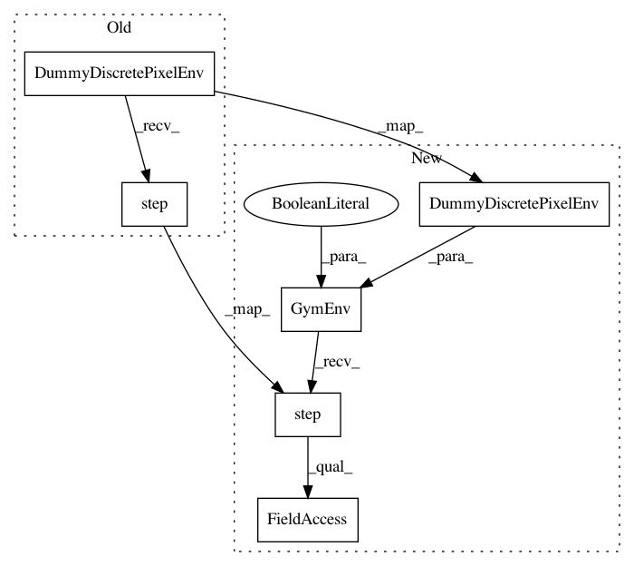

d7177951755d388cc929ad559d7dbde17a019b7c,tests/garage/torch/policies/test_categorical_cnn_policy.py,TestCategoricalCNNPolicy,test_get_actions,#TestCategoricalCNNPolicy#Any#Any#Any#Any#,78
Before Change
def test_get_actions(self, hidden_channels, kernel_sizes, strides,
hidden_sizes):
Test get_actions function with akro.Image observation space.
env = DummyDiscretePixelEnv()
env = self._initialize_obs_env(env)
policy = CategoricalCNNPolicy(env=env,
kernel_sizes=kernel_sizes,
hidden_channels=hidden_channels,
strides=strides,
hidden_sizes=hidden_sizes)
env.reset()
obs, _, _, _ = env.step(1)
actions, _ = policy.get_actions([obs, obs, obs])
for action in actions:
assert env.action_space.contains(action)
After Change
def test_get_actions(self, hidden_channels, kernel_sizes, strides,
hidden_sizes):
Test get_actions function with akro.Image observation space.
env = GymEnv(DummyDiscretePixelEnv(), is_image=True)
env = self._initialize_obs_env(env)
policy = CategoricalCNNPolicy(env=env,
kernel_sizes=kernel_sizes,
hidden_channels=hidden_channels,
strides=strides,
hidden_sizes=hidden_sizes)
env.reset()
obs = env.step(1).observation
actions, _ = policy.get_actions([obs, obs, obs])
for action in actions:
assert env.action_space.contains(action)
In pattern: SUPERPATTERN
Frequency: 4
Non-data size: 6
Instances
Project Name: rlworkgroup/garage
Commit Name: d7177951755d388cc929ad559d7dbde17a019b7c
Time: 2020-09-01
Author: 17186559+haydenshively@users.noreply.github.com
File Name: tests/garage/torch/policies/test_categorical_cnn_policy.py
Class Name: TestCategoricalCNNPolicy
Method Name: test_get_actions
Project Name: rlworkgroup/garage
Commit Name: d7177951755d388cc929ad559d7dbde17a019b7c
Time: 2020-09-01
Author: 17186559+haydenshively@users.noreply.github.com
File Name: tests/garage/torch/policies/test_categorical_cnn_policy.py
Class Name: TestCategoricalCNNPolicy
Method Name: test_get_action
Project Name: rlworkgroup/garage
Commit Name: d7177951755d388cc929ad559d7dbde17a019b7c
Time: 2020-09-01
Author: 17186559+haydenshively@users.noreply.github.com
File Name: tests/garage/torch/policies/test_categorical_cnn_policy.py
Class Name: TestCategoricalCNNPolicy
Method Name: test_is_pickleable
Project Name: rlworkgroup/garage
Commit Name: e4b6611cb73ef7658f028831be1aa6bd85ecbed0
Time: 2020-08-14
Author: 38871737+avnishn@users.noreply.github.com
File Name: tests/garage/torch/policies/test_categorical_cnn_policy.py
Class Name: TestCategoricalCNNPolicy
Method Name: test_get_action_img_obs